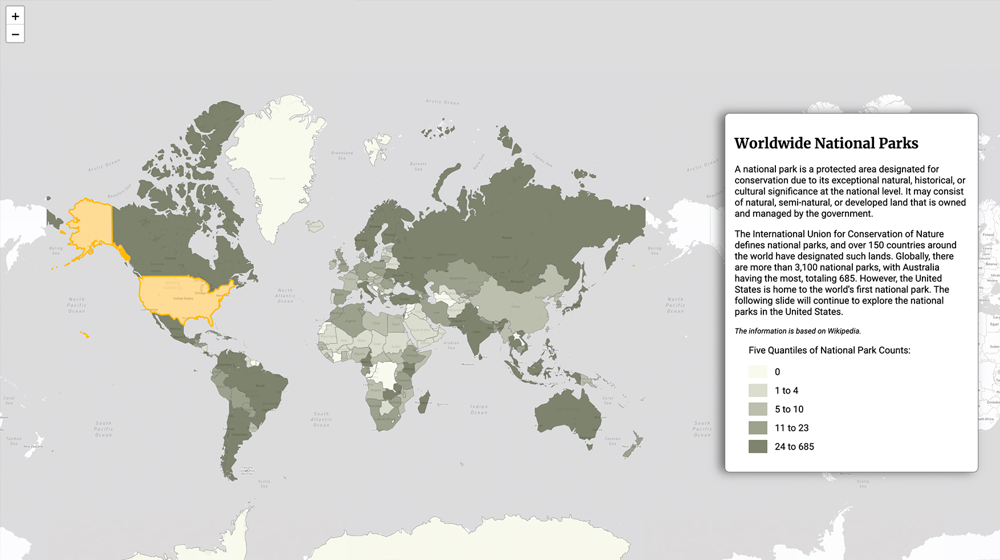

Projects
Welcome to my Projects page! Here, you'll find a curated selection of works that reflect my skills, creativity, and passion for problem-solving.Each project is a testament to my dedication to exploring new ideas, overcoming challenges, and delivering impactful solutions.From web development and data visualization to machine learning and UI/UX design, these projects span a variety of fields, showcasing not only technical expertise but also a commitment to continuous learning and innovation.
View —

-
 01 Dynamic LifelineLandscape Ecological Planning | Low-intervention 2022-06This project aims to create various types of corridors to ensure the safe traversal of sloths across three major habitat types in Costa Rica. The development model transitions from a more human-intervened approach to one that is increasingly adapted to natural conditions.
01 Dynamic LifelineLandscape Ecological Planning | Low-intervention 2022-06This project aims to create various types of corridors to ensure the safe traversal of sloths across three major habitat types in Costa Rica. The development model transitions from a more human-intervened approach to one that is increasingly adapted to natural conditions. -
 02 Mufu New LifeLandscape Mine Restoration | Participatory Planting 2021-07During the design of mountain architecture, the project provides planting guidelines required for the ecological restoration of the mine and replaces traditional planting methods with a participatory approach that engages residents.
02 Mufu New LifeLandscape Mine Restoration | Participatory Planting 2021-07During the design of mountain architecture, the project provides planting guidelines required for the ecological restoration of the mine and replaces traditional planting methods with a participatory approach that engages residents. -
03 Break the WallLandscape Prison Renovation | Self-governing 2021-10I design a new prison layout and established a model for beneficial coexistence with the community and Neighborhood Association, providing a platform for different groups to share and express their ideas.
-
 04 Reshape the FarmlandLandscape Waterfront Landform | Resilient System 2021-02This design creates diverse waterfront terrains that enable users to freely choose various activities while accommodating potential future flooding.
04 Reshape the FarmlandLandscape Waterfront Landform | Resilient System 2021-02This design creates diverse waterfront terrains that enable users to freely choose various activities while accommodating potential future flooding. -
05 The World of AlgaeLandscape Concept Design | Industry Chain | Future City 2020-06I design a comprehensive chain for the production, processing, and utilization of algae products. This approach allows residents to envision diverse futures for the city, shaped by their level of acceptance and engagement with these innovations.
-
 06 Renew Suzhou CreekLandscape Waterfront Renovation | Practical Project 2022-02During my internship at SWA, I joined the project team during the schematic design phase and was responsible for the detailed design and modification of specific nodes. The project aimed to preserve and celebrate the historical heritage of Suzhou Creek while revitalizing its waterfront as a vibrant urban public space.
06 Renew Suzhou CreekLandscape Waterfront Renovation | Practical Project 2022-02During my internship at SWA, I joined the project team during the schematic design phase and was responsible for the detailed design and modification of specific nodes. The project aimed to preserve and celebrate the historical heritage of Suzhou Creek while revitalizing its waterfront as a vibrant urban public space. -
07 Explore National ParksWeb Design Story Map | Visitor Guideline 2024-10This story map introduces some of the most famous national parks, offering a resource for learning about them. It also lays the groundwork for future additions, such as detailed park information, tools for visit planning, options for sharing experiences, and even comparisons of different parks.
-
08 Yellowstone POI GuideWeb Design Farmland | Topology | Waterfront 2022-06This project is a dashboard designed for visitors to Yellowstone National Park. It provides essential details about each Point of Interest (POI), including its location, name, type, subcategory, and estimated travel time. Additionally, it enables visitors to select their preferred POIs and plan their trips efficiently.
-
09 Dynamic LifelineWeb Design Farmland | Topology | Waterfront 2022-06I create different forms of corridors to guard sloths safely traversing three major types of habitats in Costa Rica, and the development model transitions from more human-intervened to more natural-adjusted.
-
10 Dynamic LifelineWeb Design Farmland | Topology | Waterfront 2022-06I create different forms of corridors to guard sloths safely traversing three major types of habitats in Costa Rica, and the development model transitions from more human-intervened to more natural-adjusted.
-
11 Dynamic LifelineLandscape Farmland | Topology | Waterfront 2022-06I create different forms of corridors to guard sloths safely traversing three major types of habitats in Costa Rica, and the development model transitions from more human-intervened to more natural-adjusted.
-
 12 Dynamic LifelineLandscape Farmland | Topology | Waterfront 2022-06I create different forms of corridors to guard sloths safely traversing three major types of habitats in Costa Rica, and the development model transitions from more human-intervened to more natural-adjusted.
12 Dynamic LifelineLandscape Farmland | Topology | Waterfront 2022-06I create different forms of corridors to guard sloths safely traversing three major types of habitats in Costa Rica, and the development model transitions from more human-intervened to more natural-adjusted. -
13 Dynamic LifelineLandscape Farmland | Topology | Waterfront 2022-06I create different forms of corridors to guard sloths safely traversing three major types of habitats in Costa Rica, and the development model transitions from more human-intervened to more natural-adjusted.
-
14 Dynamic LifelineLandscape Farmland | Topology | Waterfront 2022-06I create different forms of corridors to guard sloths safely traversing three major types of habitats in Costa Rica, and the development model transitions from more human-intervened to more natural-adjusted.
-
15 Dynamic LifelineLandscape Farmland | Topology | Waterfront 2022-06I create different forms of corridors to guard sloths safely traversing three major types of habitats in Costa Rica, and the development model transitions from more human-intervened to more natural-adjusted.
-
16 Dynamic LifelineLandscape Farmland | Topology | Waterfront 2022-06I create different forms of corridors to guard sloths safely traversing three major types of habitats in Costa Rica, and the development model transitions from more human-intervened to more natural-adjusted.
-
17 Dynamic LifelineLandscape Farmland | Topology | Waterfront 2022-06I create different forms of corridors to guard sloths safely traversing three major types of habitats in Costa Rica, and the development model transitions from more human-intervened to more natural-adjusted.
-
18 Dynamic LifelineLandscape Farmland | Topology | Waterfront 2022-06I create different forms of corridors to guard sloths safely traversing three major types of habitats in Costa Rica, and the development model transitions from more human-intervened to more natural-adjusted.